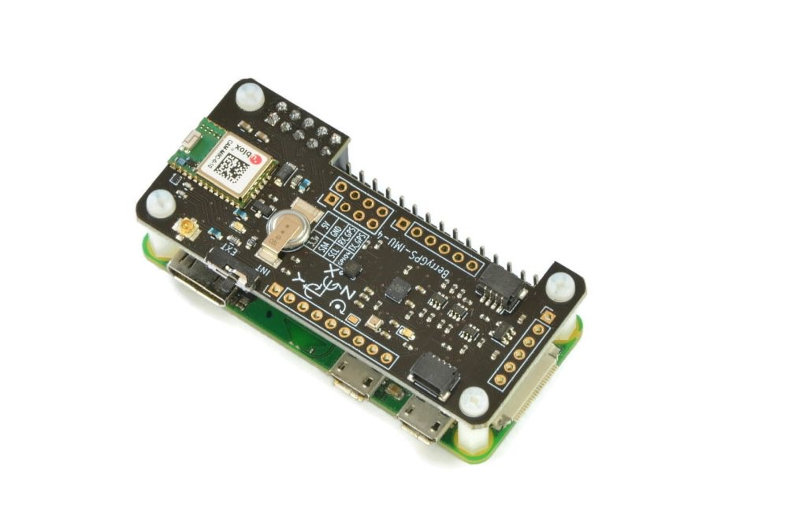

Inertial State Estimation & 9-DOF Sensor Fusion
Project VECTOR involved the development of a real-time inertial navigation system (INS) designed to estimate the orientation and position of a 9-DOF flight controller. I oversaw the software architecture and the implementation of noise-mitigation protocols.
The Navigation Stack
- Orientation Filter: Deployed a Complementary Filter to fuse high-frequency Angular Velocity ($\omega$) with low-frequency Accelerometer/Magnetometer references.
- Dynamic Rotation: Calculated a Direction Cosine Matrix (DCM) to rotate body-fixed acceleration vectors into the North-East-Down (NED) world frame.
- Drift Mitigation: Engineered a computational failsafe using an acceleration deadzone ($0.15 \, m/s^2$) and velocity decay constant ($0.98$) to stabilize the integration loop.
BLOCK_02: COMPLEMENTARY_FILTER_LOGIC
# [V&V] Fusing high-freq gyro with low-freq acc references
# Alpha = 0.75 for dynamic response
roll = ALPHA * (roll + gx * dt) + (1 - ALPHA) * roll_acc
pitch = ALPHA * (pitch + gy * dt) + (1 - ALPHA) * pitch_acc
yaw = ALPHA * (yaw + gz * dt) + (1 - ALPHA) * yaw_mag
Telemetry & Hardware

Fig 1: Integrated IMU and Raspberry Pi hardware stack.
Post-Mission Analysis
By applying a customized alpha coefficient ($\alpha=0.75$), the system successfully resolved attitude within a 2.5% error margin during dynamic testing. This project served as a foundational proof-of-concept for autonomous guidance logic in amateur rocketry.